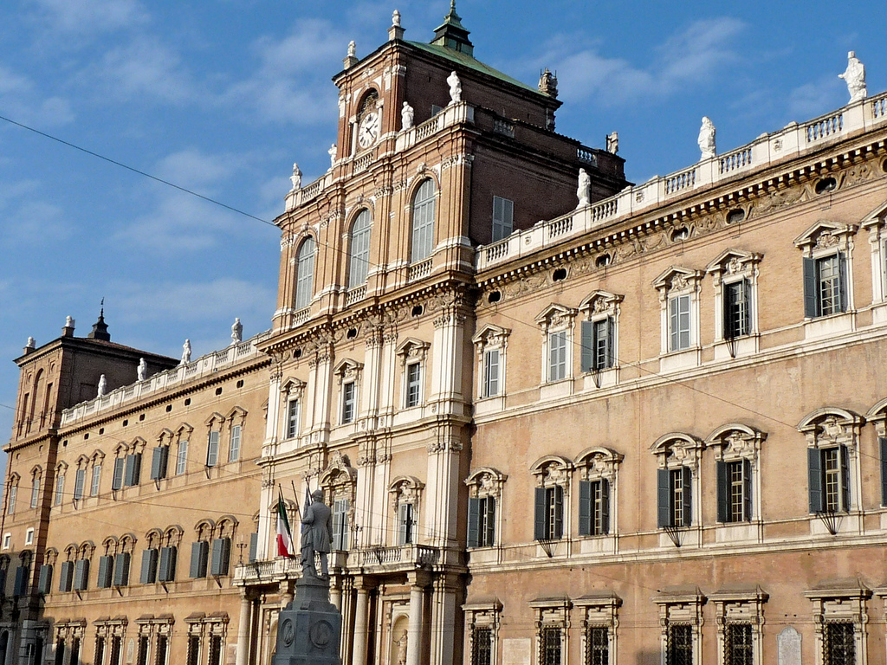

Accademia
Palazzo Ducale, fastoso edificio del XVII secolo, sede della corte estense, quindi, dal 1863 (dopo l'annessione di Modena al Regno d'Italia), sede della Scuola (poi Accademia) militare di fanteria e cavalleria. L’edificio è ancora oggi sede dell’Accademia militare. Dopo l'8 settembre 1943, l'Accademia venne sciolta e il Palazzo Ducale fu occupato dai tedeschi, che dal 25 settembre vi situarono il Platzkommandantur I (Comando del presidio militare tedesco) della provincia di Modena. Ciò vale anche per i comandi italiani. Dal 12 dicembre del 1943 vi trova sede il Comando militare provinciale dell'Esercito italiano, che inizialmente si trovava nella caserma del VI reggimento artiglieria campale di via Emilia ovest. Inoltre vi si stabilisce l'Ufficio politico investigativo (UPI) della GNR, precedentemente dislocato in piazzale Risorgimento; nelle sue carceri, collocate nel sottotetto (denominato quota pipistrello), vengono torturati partigiani e civili arrestati.